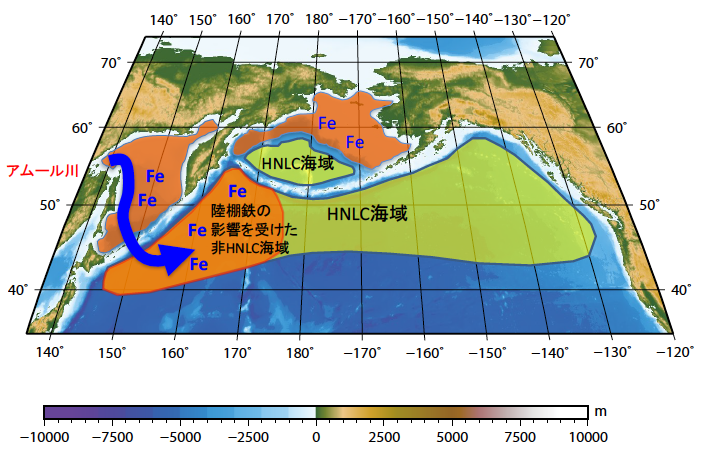

4. 北太平洋高緯度における大陸規模の陸海結合システムの解明

北太平洋中高緯度域のFe制限海域とオホーツク海からのFeの流入モデル
北太平洋亜寒帯域は栄養塩に富む深層水の湧昇によって世界有数の高い生物生産性を誇る海域です。またこの海域は微量栄養塩である鉄の供給が不足していることで生物生産が制限を受けていることでも知られています。そのような海域は高栄養塩低クロロフィル（HNLC）海域と呼びます。HNLC海域では表層に栄養塩が高濃度で存在するにもかかわらず，微量栄養塩の鉄が不足しているため、プランクトンが栄養塩を消費しつくすことができません。そのため鉄の供給が生物生産の鍵を握っているのです。
植物プランクトンは溶存鉄を利用しますが、溶存鉄は栄養塩とは異なり海水中では不安定で、すぐに酸化鉄として粒子化し沈降除去されてしまいます。よって、北太平洋HNLC海域のような外洋に鉄を供給するプロセスとしては陸上の乾燥地帯からのダストの長距離輸送が重要と考えられてきました。
ところが、近年のアムール川やオホーツク海の観測によりオホーツク海などの高緯度縁辺海の大陸棚もこの海域に鉄を供給していることがわかってきのです（Nishioka et al., 2007; Nishioka et al., 2011; Nishioka et al., 2013）。これはロシア極東の大規模河川であるアムール川からオホーツク海北西の大陸棚への鉄の供給、大陸棚におけるオホーツク中層水の形成と千島列島付近での活発な潮汐混合が奇跡的に連動した大陸と外洋をつなぐ大規模な陸海結合システムが存在するためであると考えられています。
この発見によって、北太平洋亜寒帯域の豊かな生態系は深層から栄養塩の富む水塊の湧昇をベースとして、高緯度縁辺海の大陸棚を起源とする鉄の供給によって支えられているという新しい視点がもたらされました。
この大規模な陸海結合システムの原動力はアムール川からの鉄の供給とオホーツク海北西の大陸棚における季節海氷の形成に伴う中層水の形成です。アムール川流域は降水をもたらすアジアモンスーンの影響下の北限であり、オホーツク海は北半球の季節海氷域の南限であることから、この陸海結合システムは気候変動に敏感に応答してきたはずです。この陸海結合システムの実施的な役割を評価する上で過去の気候・環境変動の解析は重要な知見をもたらすと考えられます。
そこで、この地域の海洋堆積物コア記録から最終氷期から完新世に至る北太平洋亜寒帯の外洋と縁辺海の海洋環境や生物生産、陸起源物質の供給の変動などを解析し、陸海結合システムが過去の生物生産に与えたインパクトについて明らかにしていきたいと考えています。